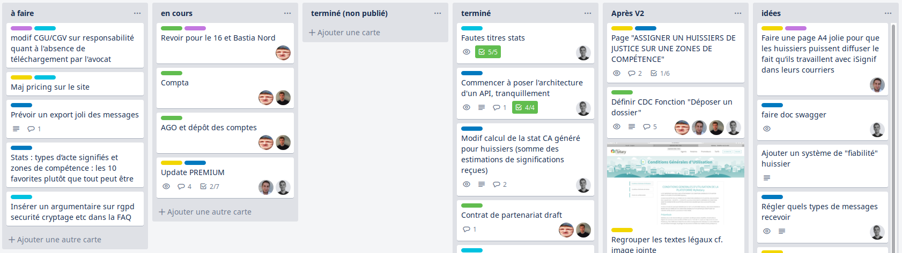

Mémoire
Alexandre Rousseau
contact@rousseau-alexandre.fr
Sommaire
- A propos de moi
- Présentation de iSignif
- Planification
- Développement
A propos de moi
Développeur Ruby / PHP Passionné et autodidacte
Travaille actuellement chez Gac Technology
A côté de ça je suis:
- Associé chez iSignif SAS
- Professeur particulier chez Superprof
- Auteur du livre API on Rails 5 publié sur LeanPub (traduit en russe et vendu en 10 exemplaires!)
et d'autres choses sur github.com/madeindjs et rubygems.org
Présentation de iSignif
SAS créée en décembre 2017
| Sacha PARTENSKY | Président |
|---|---|
| Adrien ORION | Directeur général |
| Antoine DELETTRE | Designer Web |
| Alexandre ROUSSEAU | Directeur Technique / DPO |
Simplifier le processus de signification

Le Workflow de la signification


Planification
- Estimation
- Méthode Kanban
- Git-Flow
Estimation du temps
Diagramme MCD (Modèle conceptuel des données)
- compréhension de la logique métier
- validation du cahier des charges
- estimation de la charge de travail

Découpage des tâches
Méthode Kanban avec Trello. Tâches indivisibles et rapides.

Workflow Kanban rapide
Utilisé pour sortir un MVP rapidement.

Workflow Kanban complet
Utilisé afin de tester et communiquer les évolutions.
Git-Flow
Organisation du travail avec Git

Développement
- Développement Dirigé par les Test
- Intégration avec Stripe
Test Driven Development

Objectifs
Test Driven Development Découverte d'un bug
Tests unitaires
# tests/models/advocate_test.rb
test 'should anonymize and not destroy record' do
old_user = @advocate.as_json
assert_no_difference('Advocate.count') do
@advocate.destroy
end
%i[email firstname lastname siret ...].each do |field|
assert_not_equal old_user[field], @advocate.send(field)
end
assert @advocate.deleted
end
Tests fonctionnels
test 'should show for connected user' do
login(@advocate)
get advocate_url(@advocate)
assert_response :success
assert_select 'h2', 'Actions'
end
test 'should forbid show user for other user' do
login(users(:one_other_advocate))
get advocate_url(@advocate)
assert_response :forbidden
end
Avantages
- gain de temps
- limitation des régressions
- factorisation plus facile
- et bien d'autres...
Aller plus loin
- tests d'intégration
- mutation testing avec Mutant
Intégration de Stripe